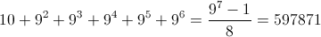

How many integers are there from 0 to 999999, in the decimal notation of which there are no two identical numbers next to each other?
The number of n-digit numbers with this property is $9^n$: in the first place, there can be any of 9 digits $($all except 0$)$, in the second, any of 9 again $($all but the same digit as the first on$)$, etc.
Nothing to translate.
 numbers.